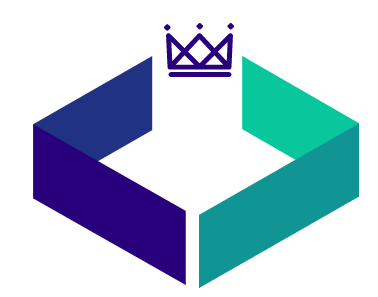

En The F.Y.C somos desarrolladores de software, es nuestra razón de ser.
Nuestras soluciones se basan en la amplia experiencia de nuestros técnicos
y en exhaustivos análisis de cada solución a implementar.

Contamos con la capacidad de elaborar programas en distintos lenguajes
de manera que se acomoden a las necesidades de nuestros clientes,
asiendo programas eficientes y funcionales utilizando las mejores técnicas
de extracción de requerimientos para satisfacer y solucionar
todos los problemas y necesidades que debe abarcar el programa.
Nuestra empresa también ofrece los servicios básicos como
mantenimiento de equipos diseño de redes, instalación de redes,
diseño e instalación de base de datos propias para su empresa como
desarrolladas en la nube, con contratos a largo plazo y de trabajos únicos.
Desarrollo de Sistemas
Les ofrecemos un servicio
de desarrollo de sistemas
de la mejor calidad, para mejorar
su negocio u empresa, haciendo énfasis en
tus necesidades como nuestro cliente.
Desarrollo de Sitios Web
Ofrecemos una amplia
variedad de opciones de
diseño para lograr una mayor
calidad de sus sitios web y obtener un
mejor resultado.
Desarrollo de Sistemas
Les ofrecemos un servicio
de desarrollo de sistemas
de la mejor calidad, para mejorar
su negocio u empresa, haciendo énfasis en
tus necesidades como nuestro cliente.
Desarrollo de Sitios Web
Ofrecemos una amplia
variedad de opciones de
diseño para lograr una mayor
calidad de sus sitios web y obtener un
mejor resultado.